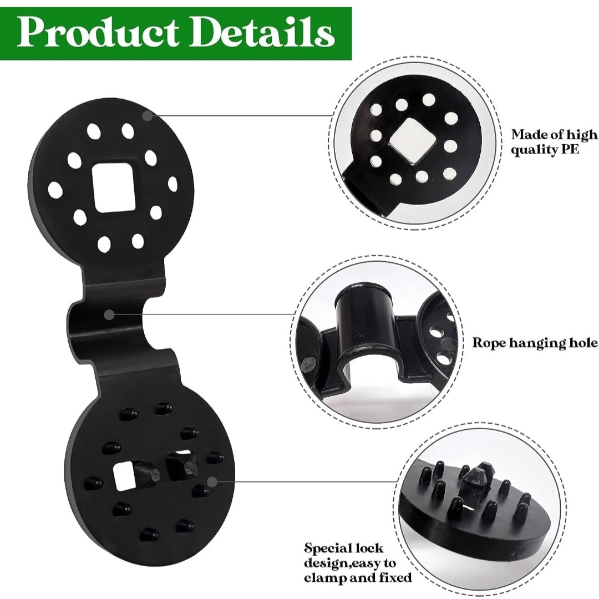
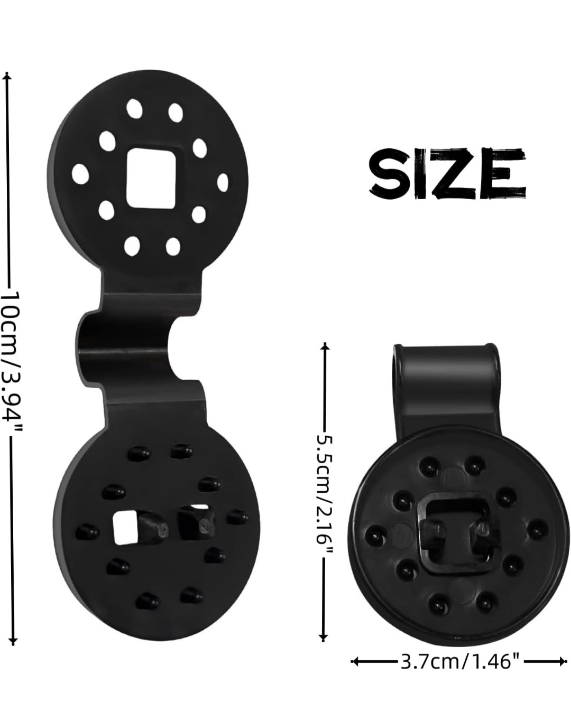
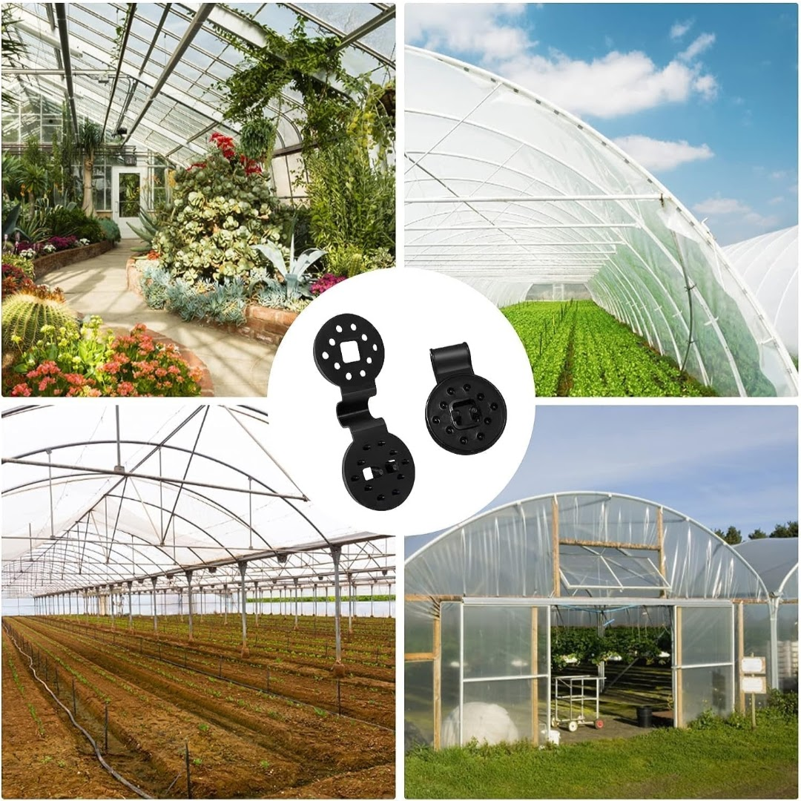
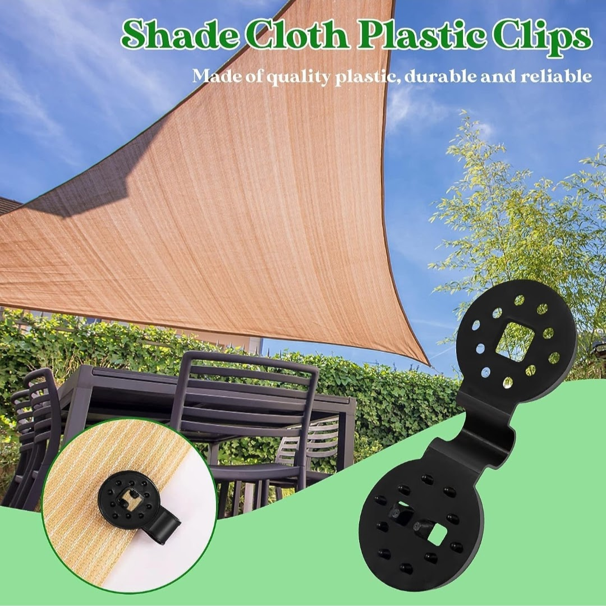
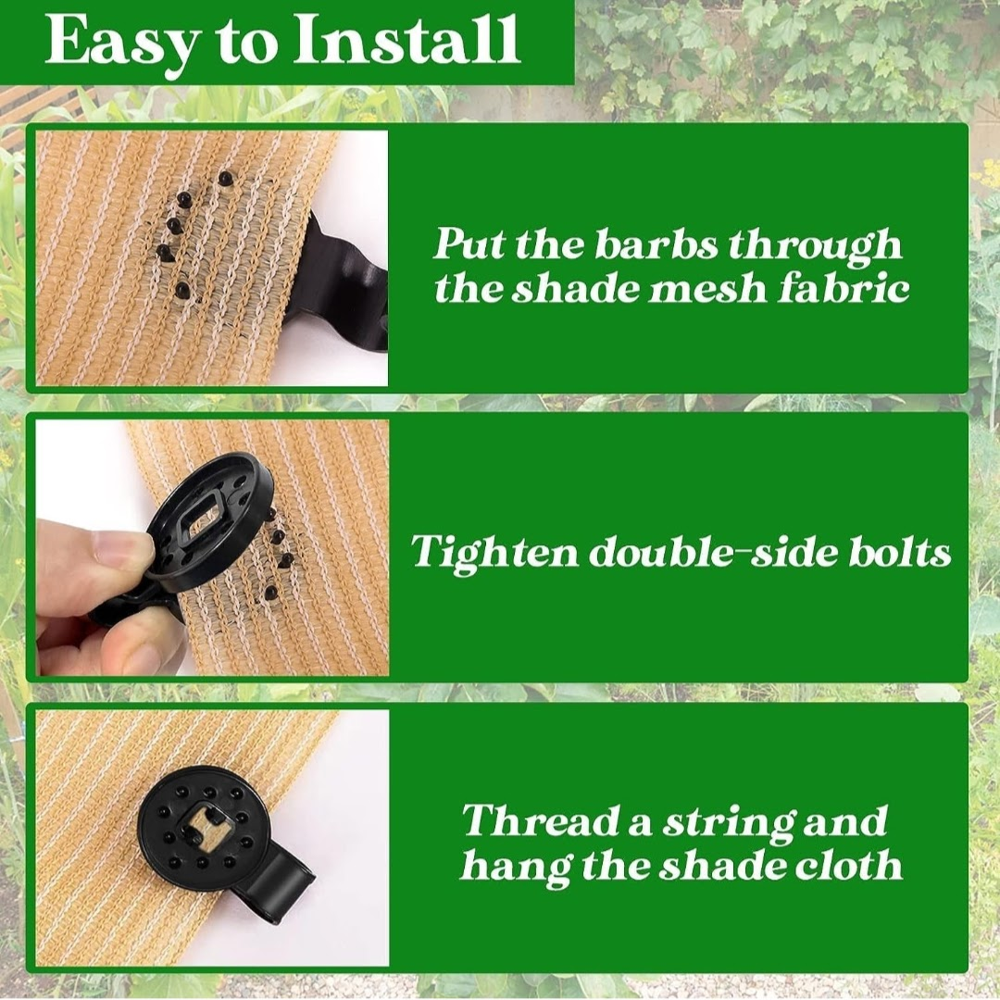
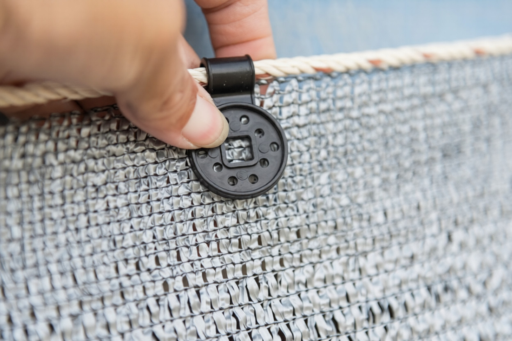
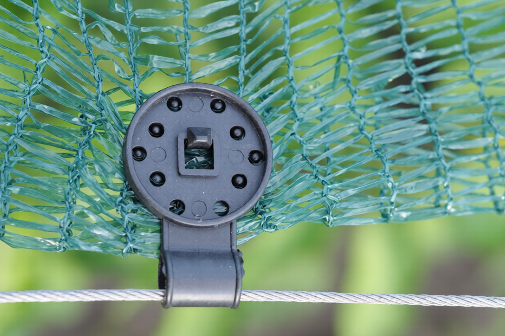

Strong, UV-stabilized plastic clips designed for secure and long-lasting fastening of agro shade nets to support structures.








Agro Shade Net Clips are used to securely attach shade nets to wires, pipes, or frames. Manufactured using UV-stabilized plastic, these clips ensure long-term outdoor durability without damaging the net fabric.
Clip size and spacing should be selected based on net GSM, wind conditions, and support structure spacing.